Pufferlager-Logik
Bei einer Pufferlager-Logik werden zusätzliche Läger in LOGOMATE angelegt.
Diese können auch ehemalige Filialen oder Zentrallager sein die nicht mehr weitergeführt werden.
Das Ziel von diesen Pufferlagern ist es so schnell wie möglich ihren Bestand zu verbrauchen.
Das wird umgesetzt, indem der Bedarf von den aktiven Filialen an das Zentrallager übergeben werden
Das Zentrallager verbraucht dann primär erst die Bestände der Pufferlager, bevor er auf seine eigenen Bestände zugreift.
Voraussetzung
-
Die Filial-SKU muss sowohl Zentrallager als auch Pufferlager übergeben kriegen
über die Stückliste mit dem Typen „Default“ und die
jeweiligen Lieferanten zugeordnet bekommen, wobei die Lieferanten der Pufferlager inaktiviert sein sollen.
-
Das Pufferlager muss die Zentrallager-SKU über die Stückliste übergeben bekommen mit
dem Typen „Puffer-SKU“ und muss den
gleichen Lieferanten besitzen, der auch bei der Filial-SKU übergeben wurde, jedoch diesmal aktiv.
Außerdem muss der Parameter „Typ“ unter dem Reiter „Status“ auf „Nur Prognose, keine Disposition“ gestellt sein sowie die SKU aktiv sein
Wenn alles richtig eingestellt wurde, sollten nun alle Bedarfe von Filialen primär von den Pufferlagern erfüllt werden.
Erst wenn die Pufferlager leer sind sollte das Zentrallager die Bedarfe mit seinem Bestand befriedigen.
Im Falle, dass die Pufferlager noch nicht leer sind, und der Bedarf von den Filialen
nicht abgedeckt werden kann in den gewünschten Zeiten, gibt es folgende Verfahren, die je nach Systemeinstellung, angewandt werden:
[Hinweis: sprechen sie Ihren REMIRA Ansprechpartner an, der das für Sie einrichtet]
Szenario „Kürzen“:
Grund-Ausgangslage:
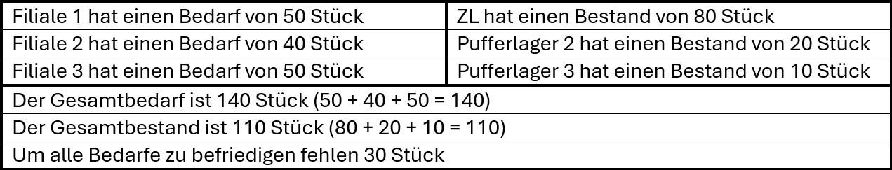
Hinweis: Der Systemparameter „teilweise nicht erfüllbare Filialbestellung“ muss mit „splitten“ befüllt sein.
Das würde wie folgt aussehen:
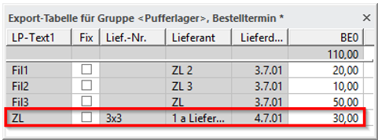
Bei einmaligen Rechnen wird zusätzlich eine Bestellung von 30 Stück für das Zentrallager erstellt um die fehlenden 30 Stück aufzutreiben für die Bedarfe der Filialen
Wird ein zweites Mal gerechnet oder wurde die Systemeinstellung „ggf. 2x rechnen“ aktiviert sieht die Export-Tabelle wie folgt aus:
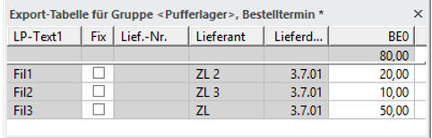
Filiale 1 wird auf 20 Stück gekürzt da Pufferlager 2 einen Bestand von 20 hat
Filiale 2 wird auf 10 Stück gekürzt da Pufferlager 3 einen Bestand von 10 hat
Filiale 3 wird nicht gekützt, da alle Pufferlager leer sind und das Zentrallager einen höheren Bestand hat als Filiale 3 benötigt.
Szenerio „Splitten“:
Grund-Ausgangslage:
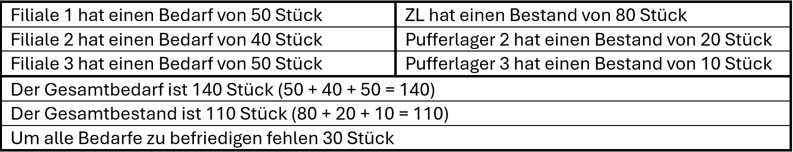
Bei dem Szenario „Splitten“ würden alle Filialen mit vorhandenen Beständen beliefert werden
und die fehlenden Mengen würden nachbestellt werden sowie an die entsprechenden Filialen ausgeliefert.
Hinweis Der Sytemparameter „teilweise nicht erfüllbare Filialbestellung“ muss mit „splitten“ befüllt sein.
Das würde dann wie folgt aussehen
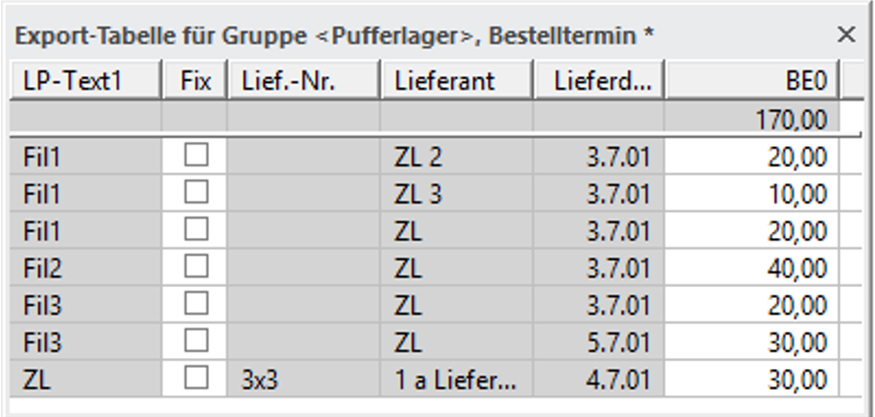
Grundsätzlich werden die Bestellungen mit kürzerem Lieferdatum priorisiert, im Falle, wie jetzt, dass alle das gleiche Lieferdatum haben wird die obere SKU priorisiert.
Dadurch ergibt sich, dass…
Filiale 1 erst per Pufferlager beliefert wird und der Rest-Bedarf vom Zentrallager übernommen wird.
Filiale 2 komplett vom Zentrallager beliefert wird, da alle Pufferlager leer sind
Filiale 3 mit dem Restbestand vom Zentrallager beliefert wird und der Rest später ausgeliefert wird durch das Zentrallager, dass die fehlenden 30 Stück nachbestellt.
(Ab Version 8.5-11) Szenario „Verschieben“
Grund-Ausgangslage:
Zentrallager hat einen Bestand von 2
Filiale LP91 hat einen Bestand von 4
Filiale LP92 hat keinen Bestand
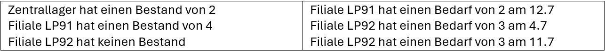
Bei dem Szenario „Verschieben“ würden die Bestände auf die Filialen verteilt werden, die sowohl vollständig und am schnellsten befriedigt werden können.
Hinweis:Bei dem Szenario „Verschieben“ würden die Bestände auf die Filialen verteilt werden, die sowohl vollständig und am schnellsten befriedigt werden können.
Das würde dann wie folgt aussehen:
Nach Rechnen mit „Splitten“:"
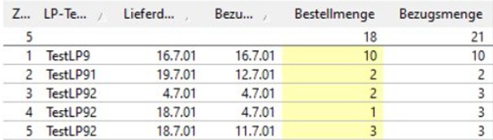
Da Filiale LP92 keinen Bestand hat, bevorzugt das Zentrallager die Bestellung von LP92 und gibt seine 2 Stück ab.
Dadurch wird die Bestellung von Filiale LP91 auf den 19.7 verschoben da das Zentrallager seinen Bestand mit einer Bestellung erst aufstocken muss.
Anschließendes Rechnen mit „Verschieben“:
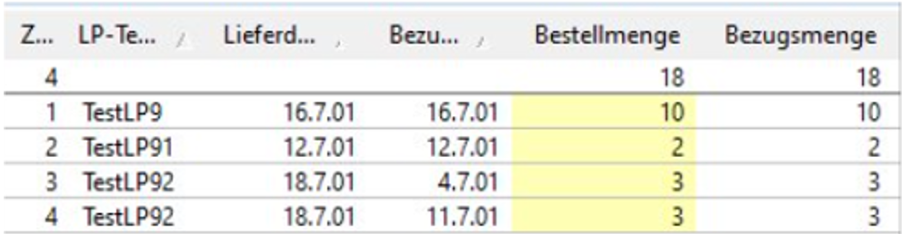
Da die Bestellung von Filiale LP91 sofort erfüllt werden kann wird die bevorzugt
Die Lieferung der Bestellung von LP92 wird verschoben auf den 18.7 da zu dem Zeitpunkt das Zentrallager wieder genug Bestand aufgebaut hat, um diese Bestellung zu befriedigen, durch die Lieferung am 16.7
ABC-Analyse
Die ABC-Analyse dient der Klassifizierung von SKUs einer frei definierbaren Kennzahl, dem sogenannten ABC-Wert.
Dieser Wert ergibt sich aus der Kombination relevanter Felder wie beispielsweise Menge und Wert – etwa den Abgängen der letzten zwölf Monate in Stückzahl. Ziel ist es, eine interne Liste zu erstellen, in der alle SKUs nach ihrem ABC-Wert in absteigender Reihenfolge sortiert sind.
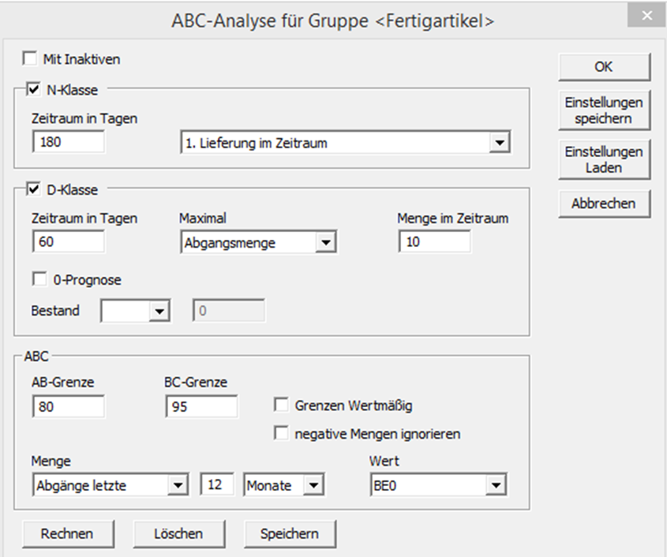
(Fenster in LOGOMATE)
Mit Inaktiven
Bei der ABC-Analyse werden auch sämtliche inaktiven SKUs mit einbezogen.
N-Klasse
Die N-Klasse umfasst alle SKUs, die im ausgewählten Zeitraum entweder keinen Umsatz oder erstmals einen Umsatz (durch Abverkauf oder Lieferung) verzeichnet haben.
- Wird eine SKU der N-Klasse zugeordnet, bedeutet dies, dass sie in den letzten 180 Tagen zum ersten Mal geliefert wurde.
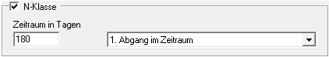
Zeitraum in Tagen
Hier wird die Anzahl Tage von "heute" ausgehend rückwärts angeben,
1.Lieferung im Zeitraum
Ein Artikel wird als N-Artikel eingestuft, wenn im definierten Zeitraum sein erstmaliger Abverkauf erfolgt ist.
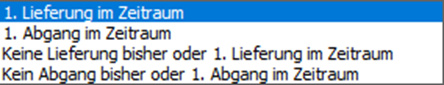
1.Abgang im Zeitraum
Ein Artikel wird als N-Artikel eingestuft, wenn im definierten Zeitraum sein erstmaliger Abverkauf erfolgt ist.
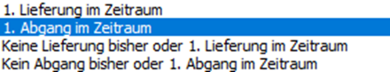
Keine Lieferung bisher oder 1. Lieferung im Zeitraum
Ein Artikel wird als N-Artikel eingestuft, wenn im definierten Zeitraum entweder keine oder die erste Lieferung erfolgt ist.
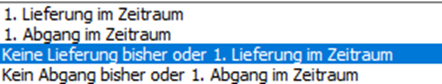
Kein Abgang bisher oder 1. Abgang im Zeitraum
Ein Artikel wird als N-Artikel eingestuft, wenn im definierten Zeitraum entweder kein Abverkauf stattgefunden hat oder der erste Abverkauf erfolgt ist.
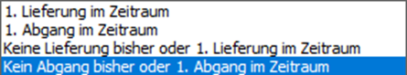
D-Klasse
Die D-Klasse umfasst alle SKUs, die im definierten Zeitraum nicht verkauft wurden oder deren vorgegebene Verkaufsmengen nicht erreicht haben.
Sie dient dazu, ausgelaufene oder „tote“ Artikel gezielt zu kennzeichnen und in einer Klasse zu bündeln.
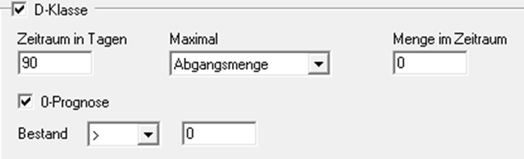
Zeitraum in Tagen
Ähnlich wie bei der N-Klasse wird dies auch rückwirkend von heute ausgeben.
Unter „Maximal“ kann man folgende Optionen auswählen:
Abgangsmenge
Dabei bezieht sich die Menge im Zeitraum auf die tatsächliche Verbrauchs- bzw. Abverkaufsmenge in der Basiseinheit des jeweiligen Artikels bzw. Lagerplatzes.
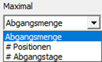
# Positionen
Dabei bezieht sich die Menge im Zeitraum auf die Anzahl der Verbräuche bzw. Abverkäufe.
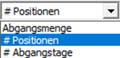
# Abgangstage
Diese Funktion ist nur verfügbar, wenn Einzelpositionen wie Lieferantendaten an LOGOMATE übergeben werden.
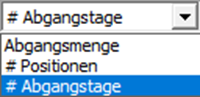
Menge im Zeitraum
Hier kann man eintragen, wie groß die Summe aller Abverkäufe im angegebenen Zeitraum höchstens sein darf.
0-Prognose
Die Aktivierung der 0-Prognose für die D-Klasse setzt eine vollautomatische Null-Prognose voraus – der Artikel muss als 0-Artikel klassifiziert, sein.
Bestand
Mithilfe der Operatoren und der Mengenanforderung zum Bestand kann die D-Klasse zusätzlich gefiltert werden, bezogen auf den aktuellen Bestand.
ABC
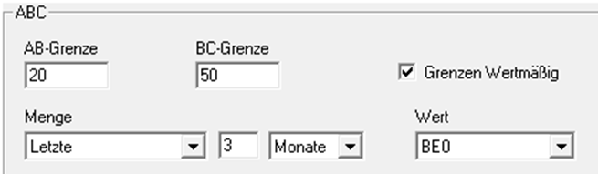
AB-Grenze
Die AB-Grenze ist ein Prozentwert, der den Anteil der A-Artikel an der Gesamtsumme der A-, B- und C-Artikel definiert.
BC-Grenze
Die BC-Grenze ist ein Prozentsatz, der den Anteil der A- und B-Artikel an der Summe aller A-, B- und C-Artikel angibt.
Grenzen Wertmäßig (Bsp.)

Knotenliste nach ABC-Wert Absteiegnd sotiert. Die Option Grenzen Wertmäßig ist nicht aktiv

Negative Mengen ignorieren
Diese Option wirkt nur mit der Mengenoption „Abgänge letzte“, erst wenn sie gesetzt ist, kann sich die ABC-Klassifizierung ändern.
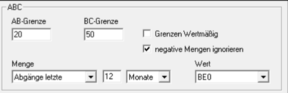
Menge
Der Beobachtungszeitraum wird unter dem Punkt 'Menge' festgelegt.
Prognose Heute
aktueller Prognosewert
Prognose V.-Termin
Prognosewert zum Zeitpunkt des nächsten Verfügbarkeitstermins
Prognose Mittelwert
durchschnittliche Tages-Prognose
Abgänge letzte
Abgänge der letzten x Tage / Wochen / Monate von heute an
# Pos. letzte
Positionen der letzten x Tage / Wochen / Monate von heute an
# Abg.-Tage letzte
Abgangstage der letzten x Tage / Wochen / Monate von heute an
Wichtig: Die Funktionen „#Pos. Letzte“ und „#Abg.-Tage letzte“ funktionieren nur wenn Lieferantendaten an LOGOMATE übergeben werden.
Aktionen (Typen)
Im Handel versteht man unter Aktionen in der Regel verkaufsfördernde Maßnahmen. In LOGOMATE hingegen werden sämtliche Planbedarfe als Aktionen bezeichnet.
LOGOMATE erkennt ungewöhnliche Verkaufs- oder Verbrauchsmuster und kann diese durch automatische Aktionen ausgleichen.
Automatische/Stichtags- Aktionen
Automatische Aktionen dienen zur Korrektur von Vergangenheitswerten durch OoS-Bereinigung, die Behandlung von Ausreißern, das Setzen negativer Historienwerte auf null, sowie durch Stichtags-Aktionen.
Stichtags-Aktionen sind zukünftige Aktionen, die durch die Definition einer Variablen Saison mithilfe von Stichtagen entstehen und dabei die Prognose ersetzen.
Wichtig! Automatische Aktionen lassen sich weder manuell hinzufügen noch direkt entfernen.
Manuelle Aktionen
Manuelle Aktionen sind Aktionen mit bekanntem Zeitraum und festgelegter Menge. Für zukünftige Aktionen ist ein Wert im Feld Erwartete Menge oder Rel. erwartete Menge erforderlich; diese Mengen sind in der Regel positiv und werden als Zusatz (On Top) zum Prognosewert addiert.
Vergangene Aktionen benötigen einen Eintrag im Feld Menge oder Rel. Menge; die Aktionsmenge kann positiv oder negativ sein und dient zur Korrektur des Abverkaufswerts.
Semi-Aktionen
Semi-Aktionen sind Aktionen mit festgelegtem Zeitraum, deren Umfang jedoch unbekannt ist, liegen ihre Zeiträume in der Vergangenheit, fließen sie nicht in die Prognose ein.
Berechnung der Semi-Aktionen
Diese Parameter bestimmen, auf welche Weise die Aktionsmengen berechnet werden, jedoch beeinflusst der Parameter nur Semi-Aktionen, die in der Vergangenheit liegen.
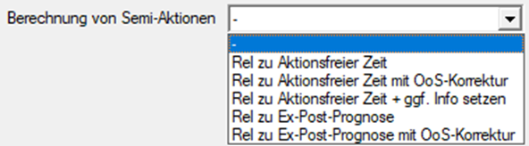
Typen von Semi-Aktionen
Rel zu aktionsfreier Zeit
Die Aktionsmengen ergeben sich aus dem Verhältnis der Verkäufe während des Aktionszeitraums zu den Verkäufen in aktionsfreien Zeiträumen.
Rel zu aktionsfreier Zeit + ggf. Info setzen
Keine Berechnung erfolgt; endet die Semi-Aktion vor dem ersten Abgang, wird sie in eine Info-Aktion umgewandelt.
Rel zu Ex-Post-Prognose
Die Aktionsmengen werden auf Basis des Verhältnisses zwischen Verkäufen und der Ex-Post-Prognose berechnet.
Rel. zu aktionsfreier Zeit mit OoS-Korrektur
Für diesen Parameter sind historische Bestände erforderlich; entgangene Aktionsmengen werden anhand des Verhältnisses der Verkäufe im Aktionszeitraum zu den Verkäufen in aktionsfreien Zeiträumen berechnet.
Rel. zur Ex-Post-Prognose mit OoS-Korrektur
Für diesen Parameter sind historische Bestände notwendig; entgangene Aktionsmengen werden anhand des Verhältnisses zwischen Verkäufen und der Ex-Post-Prognose berechnet.
Info-Aktionen
Info-Aktionen dienen lediglich der Kennzeichnung von Aktionen und haben grundsätzlich keine Auswirkungen; wird der Aktionstyp jedoch von Semi auf Info geändert, können zuvor unberücksichtigte Zeiträume samt Abverkäufen und Aktionen in die Prognose einfließen.
Exklusive Aktionen
Exklusive Aktionen ermöglichen die Festlegung von Zeiträumen, in denen Ausreißer trotz aktivierter Ausreißererkennung nicht korrigiert werden; wird der Aktionstyp von Ausreißer auf Exklusive geändert, bleibt die berechnete Aktionsmenge unverändert bestehen.
Beispiel:
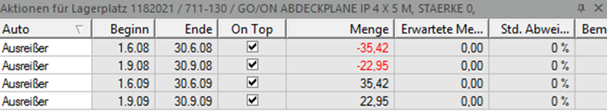
LOGOMATE hat mehrere Ausreißer in den historischen Abverkaufsdaten erkannt und entsprechend korrigiert.
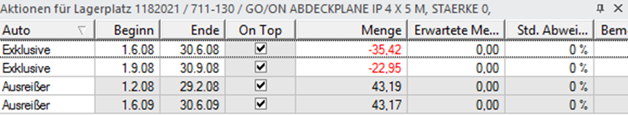
Damit die Aktionsmengen künftig nicht durch automatische Aktionen angepasst werden, wurde bei zwei Aktionen der Aktionstyp von Ausreißer auf Exklusive umgestellt.
Kontrakte
Kontrakte in LOGOMATE [Konditionen/Parameter] sind Vereinbarungen zwischen einem Lieferanten über die Lieferung einer bestimmten SKU.
Der Kontrakt legt keine konkreten Liefermengen oder -termine fest, sondern definiert lediglich die Gesamtmenge, die innerhalb des vereinbarten Zeitraums geliefert werden soll (Mengenkontrakt).
Zu dem festgelegten Zeitpunkt muss die Ware jederzeit bereitstehen.
Kundenkontrakte
Beim Kundenkontrakt wird kein fester Tag festgelegt, sondern ein Lieferzeitraum.
Beispiel:
(Anders als bei den Reservierungen wird im Kundenkontrakt ein SiB festgelegt.)
Kontraktarten
Kontrakte ignorieren
Die in den Konditionen erfassten Kontrakte werden ignoriert.
Lieferantenbevorzugung
Die Lieferantenauswahl richtet sich nach den vorhandenen Kontraktarten. Der Zeitpunkt der Verfügbarkeit wird bestimmt, wobei das zugrunde liegende Entscheidungskriterium im Abschnitt ‚Kontraktauswahl‘ definiert ist.
Lieferantenauswahl
Die Lieferantenauswahl erfolgt entweder auf Grundlage vorhandener Kontrakte oder gemäß dem im Abschnitt ‚Kontraktauswahl‘ festgelegten Entscheidungskriterium.
Max. Menge
Die maximal abrufbare Menge beim Lieferanten
Max. Menge u. Lieferantenauswahl
Die Auswahl des Lieferanten erfolgt auf Basis der maximal abrufbaren Menge sowie der festgelegten Kriterien zur Lieferantenauswahl.
Bestellungsaufteilung
Wenn diese Option aktiviert ist, können die Bestellmengen für SKUs mit mehreren aktiven Lieferanten aufgeteilt werden. Die Optionen Dauerauftrag und Bestellaufteilung stehen zur Verfügung, beide können kombiniert werden.
Pseudo-Kontrakte
Bei Pseudo-Kontrakten kann ein zusätzlicher SiB-Wert vorgegeben werden. Für diese Art von Kontrakten darf keine Kunden-Nummer hinterlegt werden,
da sonst möglicherweise das Feld „Geliefert“ automatisch befüllt wird.
Von REMIRA importierte Pseudo-Kunden-Kontrakte enthalten nicht die Kunden-Nummer, sondern den Vermerk „PSEUDO“.
Kontrakte auf Artikel-Ebene
Ein Artikel kann mehrere Kontrakte besitzen, die im Reiter Kontrakte des Konditionenfensters hinzugefügt und automatisch auf die zugehörigen SKUs vererbt werden.
Lieferantenkontrakte splitten
Lieferantenkontrakte können ab LOGOMATE Version LM2021-11 / 8.5-03 nach Kontraktmenge und -zeitraum gesplittet werden.
Wählen Sie hierzu unter [Parameter → Disposition → Kontraktart] die Optionen „Lieferantenauswahl u.Max. Menge“ aus.
Für jeden Kontrakt wird dabei eine separate Bestellposition erzeugt.
Die Auftragsnummer der Bestellung bleibt dabei erhalten – es wird lediglich eine neue Position mit eigener Positionsnummer zur bestehenden Bestellung hinzugefügt.
Saison
Wenn LOGOMATE unübliche Abgänge in der Historie erkennt,
wird versucht diese zu korrigieren. Passiert das öfter in
der gleichen Jahres-/Monats-/Wochen-Periode mit einer ähnlichen
Abweichung von X% wird eine Saison erkannt. Das wirkt sich
dementsprechend auch auf die Prognose aus, da dann mit
dieser „Abweichung“ weitergerechnet wird.

Will man die Saison-Erkennung anpassen so kann man das im Prognose-Fenster bei den Parametern tun.

Dort kann man vorgeben wie viele Perioden nötig sind damit eine Saison erkannt werden kann, sowie ab welchem Effekt-Faktor mit einer Saison erkannt werden darf.
Es ist auch möglich eine Saison von einer anderen SKU auf eine andere SKU zu übertragen.
Dafür wird die SKU, von der die Saison übernommen werden soll, im Vorgabe-Fenster der Parameter, beim Parameter „Saison verwenden von“, eingetragen.
Wenn die SKU bereits ohne diese Option, aktuell eine Saison hat, wird die übergebene Saison ignoriert (Das wird auch als Prognose-Warnung angezeigt).
Stichtage
Bei variablen Saisons werden Stichtage verwendet.
Das sind manuell angelegte Saisons, die im gleichnamigen Fenster bei den Parametern eingetragen werden.
Im oberen Block können die einzelnen Ereignisse eingerichtet werden. Dort werden Länge, Effekt-Faktor und Beschreibung eingetragen.
Im unteren Block werden die betroffenen Tage angezeigt. Dort müssen mindestens 2 Stichtage angegeben werden (1 in der Vergangenheit & 1 in der Zukunft), damit eine Saison berechnen zu können.
Wurde alles korrekt eingetragen wird eine Stichtag-Aktion erzeugt für die angegeben Termine.
Ohne Saison-Erkennung/ Stichtag-Aktion:

Mit Saison-Erkennung/ Stichtag-Aktion: